ePRO
This is a patient's diary.
What is Flask PRO?
- Flask PRO is an online ePRO app
- Forms PRO unlimited subjects, forms and data.
- You can create the ePRO yourself using a super friendly interface.
- Runs on desktops, notebooks, tablets and phones.
Prerequisites
Study definition
To define study with ePRO, the study should be defined as the following: 1. Enable patient reported outcome module? 3. PRO URL: should be https://epro.flaskdata.io, (If study has another PRO then FlaskData fill the PRO URL field with your study's PRO URL).
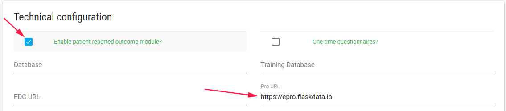
Forms definitions
To define ePRO questionnaire, you need to create CRF/s and Event includes your diary CRF/s first.
Second you need to create Study Schedule with your period diary.

Welcome Email and SMS
When subject has been created the patient gets a welcome email and SMS with PRO link.
He/She is invited entering and fill his/her diary.
If patient forgets his password site role user (like CRC or PI) can go to subject's profile page and send him Welcome back/Reset password email.
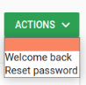
Patient will get a welcome email again.
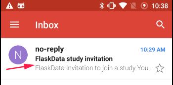
Subject invited
When patient gets a welcome emil/SMS

He/she should click on the link.

The patient is invited to login with his Google account OR to choose a password.
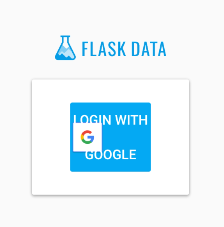
Note
To create a password or reset password - CRC user should reset subject's password by clicking on Reset password option.
The patient will get a reset password email
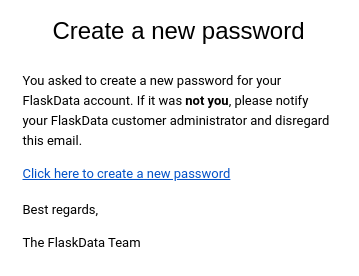
After Subject set his/her password, He can login to ePRO by Google account or with FlaskData password

Android application
Installation
If patient has an Android phone, he can install Flask ePRO application from Google play store.
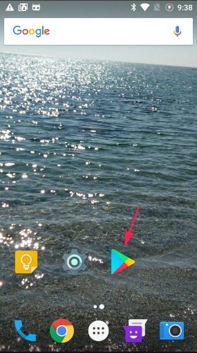
Search flask epro and install it
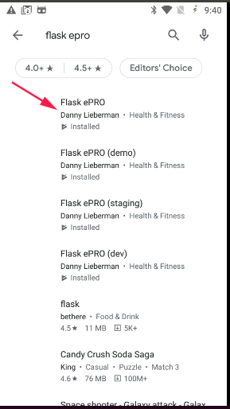
After patient install Flask ePRO application he will see the Flask ePRO icon

Just click on the application and login to ePRO, Enjoy 
Login to Flask ePRO
Open Flask ePRO application and login to your diary. (To login by email and password you should create the password first by reset password option)

Enter diary
While patient logins to ePRO, he see his diary for the current date.
He should fill his diary and save.
If there are a few Forms in the diary the next form will be opened when he clicks SAVE AND NEXT button.
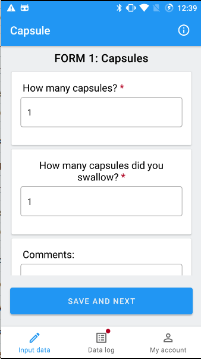
Important
- If patient filed a part of his diary he can continue later.
- If patient forgot to fill his diary, He can fill it next 2 days (By logs option)
Required fields are marked with a red asterisk.
If patient try to save the diary with missing information, an error flag appears
Clicking on the error flag opens the error message.
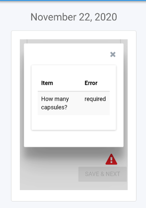
Input Data
Patient can click Input Data option and fill his diary for the current date.
If he saved his data before, He just see his data and cannot change it.

Logs
Patient can see / continue his diaries in Logs option

My Account
Patient can change his account definition by clicking on My Account option

He can change his default language.

Support languages
For ePRO lunguages support customer admin user should define it in the CRFs definition
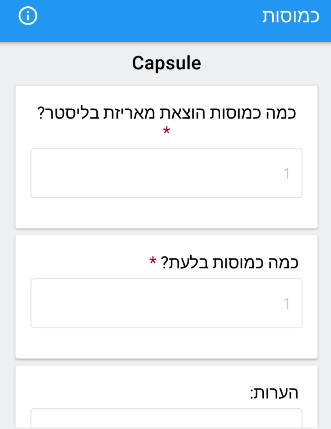
Patient can change ePRO display mode by clicking on theme option.

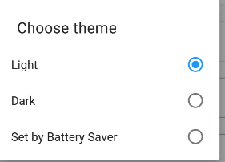
If he sets the mode as Dark he will see something like this:

Study information
The patient can see details of the study he is participating in by clicking on the exclamation mark

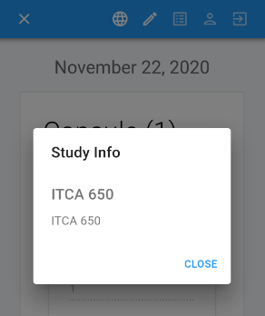
FlaskData application
If subject cannot use Flask ePRO android application he/she can use FlaskData application to enter his/her diary.
It's less beautiful but works great. 
In any case in such a case that the phone does not support Android it is better for the patient to use his desktop.
Login
Patient should login to FlaskData ePRO URL (https://epro.flaskdata.io)

Input Data
When patient login to his diary a diary for the current date opens.
He can start to fill the diary.

If there are another Forms in the diary he should click SAVE AND NEXT button

If he filled the last form he should click FINISH button

When patient finish fill diary a success message appears

To go back to Input Data click on the icon
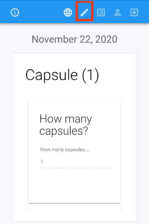
Logs
Patient can see his diaries by Logs option
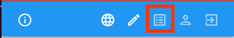

By logs option patient cannot change his diaries, just see them

Forget Option
-
If patient filled diary but didn't finish all his diary forms he can continue from Logs option
He can continue filling data for yesterday's diary and for the diary of two days ago.
-
If patient forgot to fill his diary he can enter data for yesterday's diary and for the diary of two days ago.
My Account
To see account definition click on My Account icon

Note
Patient can change the language by click on Languages icon - this option change the language for this login but it doesn't change patient account definitions, So in the next login the language will be the default language again.

Save patient's account information after changing.

Study information
The patient can see details of the study he is participating in by clicking on the exclamation mark
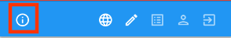
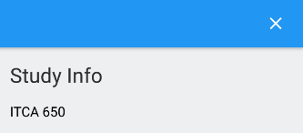
Logout
After patient finish filling his diary he can logout from the system by clicking Logout icon.